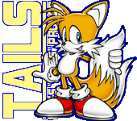
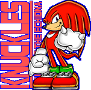
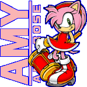

Sonic the Hedgehog
The world's fastest, supersonic hedgehog.
He loves to live a free and easy life, and has a bit of a temper. But in truth, he has a kind heart and will not leave anyone in need alone. The game's controls are well-balanced, and I recommend it for beginning and advanced players alike.
|
Miles "Tails" Prower
Sonic's sidekick, a little fox.
He has a gentle personality and is a big fan of mechanics. Tails' greatest feature is his ability to fly by spinning his two tails, which is also the origin of his nickname. By flying through the air, you can easily explore the zones. Tails is sure to be able to find the "Special Spring" in even the most obscure of places. |

Knuckles the Echidna
Sonic's best friend and rival, the echidna.
He is a powerful echidna that can shatter rocks with a single blow. He has a single-minded and serious personality. One of Knuckles' special features is that he can glide and climb walls. Thanks to these abilities, he has a wider range of movement than Sonic. This makes him a good character for exploring maps. |

Amy Rose
The self-proclaimed "girlfriend of Sonic" who is always full of energy.
With her beloved Piko Piko Hammer as her weapon, she helps Sonic. Unlike the other characters, Amy cannot perform the common actions of Spin Dashing and Spin moves, which can be a little difficult to handle if you're used to them. Among the four characters, Amy is the one for advanced players. |
|